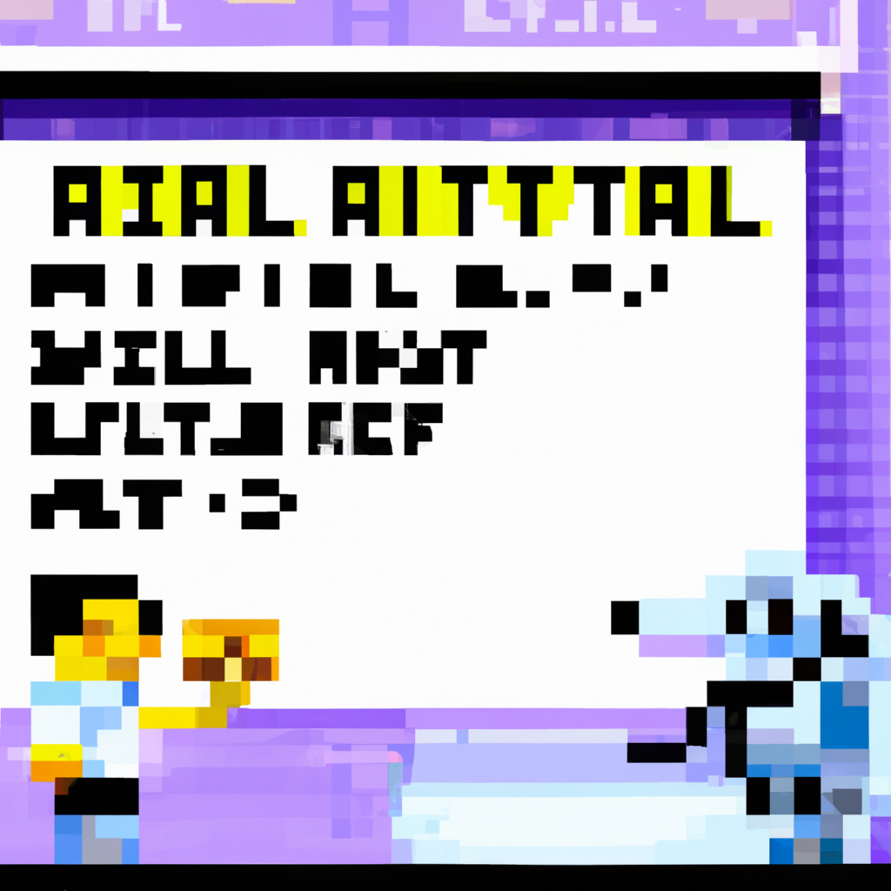

Why AI will never replace the radiologist
In the world of healthcare, artificial intelligence (AI) is quickly becoming a major component of the medical field. AI is being used to diagnose diseases and predict patient outcomes, and many believe that AI will eventually replace the radiologist. While AI can provide many benefits to the healthcare industry, it will never replace the radiologist.
Here are some of the reasons why:
1. AI cannot replace the human eye: AI algorithms can detect anomalies and patterns in medical images that a human eye cannot. However, the level of detail and accuracy of the images produced by AI algorithms still cannot match that of a trained radiologist.
2. AI cannot replace the human touch: Radiologists provide more than just medical images; they provide personal care and support to their patients. AI algorithms are not programmed to provide the same level of care and comfort that a radiologist can provide.
3. AI cannot replace the radiologist¡¦s experience and expertise: Radiologists have many years of experience and expertise in their field. This experience and expertise cannot be replaced by AI algorithms.
As technology continues to advance, AI will become an increasingly important part of the healthcare industry. However, AI will never replace the radiologist. AI algorithms can provide valuable assistance to radiologists, but they will never replace the human touch and expertise that radiologists provide.